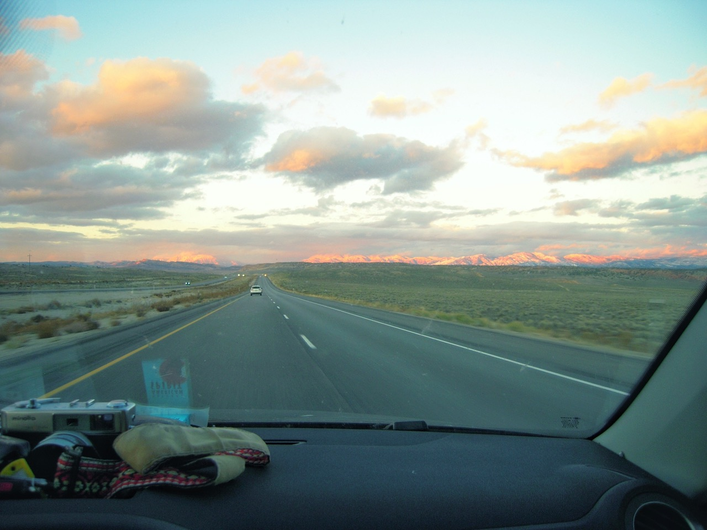

FILM ON THE ROAD: SEDONA Pt. 2
AUGUST 24 2024
A little while ago I talked about a trip that I took to Sedona (in this post) and it was such a fun trip that I decided to do it again! And that's what we're going to talk about in this post.
My first trip to Sedona was a road trip with my Mom in July 2021. The actual trip was to Phoenix to visit family but going to Sedona was the most fun part, fun enough that I decided to to it again 3 months later with Liv... my now ex-girflriend, but we were dating at the time.. I know it's not helpful that I'm still writing about things from 2021 even though this post is dated August 2024, but I'm really trying to write about my history with film and this was a really fun trip so I figured I should at least write about it briefly.

The trip plan was to drive from SLC to Lake Powell on the first day and then camp at Lake Powell so that I could get a sunrise photo from the Wahweap Overlook.. which is pretty much just a nice rest stop off of Hwy 89, but I thought it would make for a great sunrise photo. We also stopped in some random small towns along the way because it's too hard to pass those up.


After Lake Powell we were going to drive to Flagstaff to spend some time there and then to Sedona where we would spend the night and most of next day before heading back north to Salt Lake.

Our lake Powell night was probably the best of the entire trip. We paid to camp so we were there legally, we easily found a spot away from most of the people on the coast and we got to our campsite with plenty of time to enjoy the beatiful sunset. The rest of our camp spots were not as easy.

The next morning we woke up early to catch the sunrise which sucked (the waking up part), but it was one of the main things that I wanted to do on this trip so Liv was nice enough to tolerate the early roll out from our more or less ideal car camping spot.


After sunrise we made some breakfast at the overlook and then drove towards Flagstaff. Flagstaff was beautiful in the fall but it was freezing cold so I barely took any pictures there. We mostly just stopped for some coffee and then punched on towards Sedona.

I was okay missing out on photos in Flagstaff though because I knew that most of the picture taking would happen in Sedona anyway...
The next day that is because by the time we got to Sedona it was around 5pm and then we spent most of the evening driving around looking for a camping spot which proved to be incredibly difficult. Most of the roads and trail heads in Sedona had very very obvious no overnight parking signs. We ended up settling for a semi busy road that had a large tree by it with enough room that we could sort of hide our car. It was kind of a stressful spot and there were tons of cars driving past us all night but no taps on the window.. so that was a good sign.


There was no reason to dilly dally at that camp spot so we left to go to Cathederal rock for sunrise where I got some of my favorite photos from the trip!


After sunrise we spent some time just walking around Sedona before going on another hike up Sugurloaf mountain to take some pictures from a really cool cave.


I used expired film at the cave and I wasn't really happy with how the colors turned out, but it was a nice hike none the less.

We were a little scarred from trying to find a campsite in Sedona the last night so we decided that instead of spending another night we would start our drive back to SLC early and find a spot along the Oak Creek canyon which you drive along on your way out of Sedona.

Our night was much less stressful since we were sufficiently tucked away on a fire road, however, we were up in the Coconino forest above Sedona so it was freezing cold. It was not a pleasant evening at all and I barely got any sleep. But the sunset pictures were quite nice and somehow the expired Ultramax worked out a lot less better with less light... I have no idea why.

The next day our goal was to make it back to SLC in the daylight. It was about an 8 hour drive and we were a little tired of sleepless nights on the road so we mostly just wanted to be home. I had taken plenty of pictures that I was happy with, liv was probably tired/bored of watching me take them so that day we just hit the road. We made a couple pit stops a long the way but nothing note worthy for sharing photos.

We didn't make it home before sunset but we did get a beautiful one on the road and we made it to Salt Lake shortly after.
And that was pretty much the trip :) It was a ton of fun, very photo centric which I loved and also just super fun to explore Sedona!